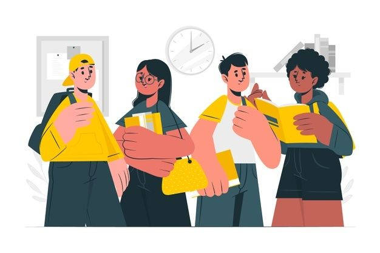

Persiapan Sebelum Interview
Mungkin sebagian dari kita sudah mengetahui saat melamar pekerjaan, tahapan yang harus dilalui itu sangatlah panjang Misal, kalau kamu suda lolos dalam seleksi administrasi. Tahapan selanjutnya yang harus kamu lalui adalah interview.
Interview alias wawancara kerja adalah salah satu tahapan yang krusial dalam proses perekrutan. Kenapa bisa begitu? Soalnya, wawancara kerja bertujuan untuk mengetahui kepribadian semua kandidat dan membantu perusahaan memilih kandidat yang sesuai dengan harapan perusahaan
Sayangnya, buat orang yang pertama kali terjun ke dalam dunia kerja (seperti lulusan SMA/SMK atau lulusan baru pergurua tinggi aka fresh graduate), wawancara kerja sering jadi momok yang paling menakutkan dan bikin deg-deg-an sampai hari wawancara kerja berlangsung Selain itu, mereka juga akan bingung bagaimana menghadapi wawancara kerja biar berjalan mulus tanpa hambatan.)
Untuk mengatasinya,yuk simak penjelasan persiapan wawancara di bawah ini.
1. Persiapkan CV, Portfolio, dan dokumen lain yang dapat menonjolkan kemampuanmu
Apabila wawancara ini diibaratkan sebagai medan perang, maka CV, portfolio dan dokumen penunjang lainnya adalah amunisi yang harus kamu persiapkan sebelum berperang. Sekarang ini, membuat CV semenarik dan seinformatif mungkin akan menjadi nilai plus bagimu. Apalagi kalau kamu melamar untuk pekerjaan atau jurusan yang berkaitan dengan industri kreatif. Tentu CV-mu akan menjadi hal pertama yang akan dinilai. Selain dari segi tampilan, CV-mu juga harus menggambarkan kemampuan dan pengalaman yang kamu miliki sejelas mungkin. Kemudian, portfolio dan dokumen penunjang lainnya, seperti sertifikat misalnya, juga tidak boleh lupa untuk dipersiapkan. Dua hal ini yang akan menjadi bukti dan semakin menguatkan informasi yang telah kamu tulis di CV.
2. Gali informasi tentang posisi atau jurusan hingga perusahaan atau universitas yang dituju
Ini hal kedua yang paling penting tetapi kadang sering terlupakan oleh banyak orang. Jangan sampai kamu tiba di tempat wawancara dengan kepala kosong. Mencari tahu tentang perusahaan dan posisi yang hendak kamu lamar penting sekali karena pewawancara seringkali bertanya tentang hal tersebut. Jadi, alangkah baiknya kamu sudah mempersiapkan hal ini terlebih dahulu sehingga ketika pertanyaan tersebut muncul kamu tahu harus menjawab apa. Pengetahuan mengenai perusahaan atau universitas yang kamu tuju menunjukkan kalau kamu memang benar-benar serius dan berminat untuk bekerja atau berkuliah di sana.
3. Datang tepat waktu
Ketepatan waktu saat datang ke wawancara juga memiliki peran penting loh. Datang tepat waktu akan menunjukkan karakter disiplin dalam diri kamu. Dalam urusan wawancara, ada baiknya jika kamu datang 15-20 menit sebelum jadwal wawancaramu. Waktu tersebut dapat kamu pergunakan untuk merapikan penampilan, menyiapkan CV dan bahan wawancara lain yang memang diperlukan, hingga menenangkan pikiranmu agar kamu tidak gugup saat wawancara.
4. Berpenampilan rapi dan bersikap sopan
Berpakaian rapi adalah wajib hukumnya ketika kamu menghadiri wawancara. Biar bagaimanapun, hal pertama yang akan dilihat oleh pewawancara adalah penampilanmu. Penampilanmu adalah amunisi lain yang dapat menunjang CV dan portfolio yang sudah kamu persiapkan. Penampilan mungkin memang bukan menjadi penentu lolos tidaknya kamu melewati tahap wawancara, tetapi penampilanmu akan memberikan kesan dan memengaruhi penilaian orang lain terhadap kepribadianmu.
5. Siapkan jawaban-jawaban yang kira-kira kamu tahu akan ditanyakan dan pertanyaan yang ingin kamu ketahui seputar posisi atau pekerjaan yang ingin kamu lamar
Biasanya pewawancara akan banyak menanyakan pengalaman kerjamu sebelumnya. Jika kamu belum memiliki pengalaman kerja, ia akan fokus menanyakan tentang kemampuan yang kamu miliki terkait dengan bidang pekerjaan yang kamu lamar. Selain itu, pewawancara juga biasanya sering menanyakan rencana masa depanmu dalam beberapa tahun yang akan datang. Maksud dari pertanyaan ini bukan mengarah ke rencana masa depan personalmu, tetapi lebih kepada kontribusi apa yang bisa kamu berikan kepada perusahaan di waktu yang akan datang. Nah, sebaiknya sebelum wawancara, kamu persiapkan terlebih dahulu jawaban atas pertanyaan ini sehingga pada saat ditanyakan kamu bisa menjawab dengan percaya diri dan tidak kebingungan.
Bertanya seputar pekerjaan atau lingkup kerja perusahaan yang kamu tuju dapat menunjukkan minat dan ketertarikanmu yang lebih dalam terhadap perusahaan tersebut. Apabila kamu diberikan kesempatan untuk bertanya, gunakanlah sebaik mungkin untuk mendapatkan informasi yang kamu inginkan. Apabila memang sudah tidak ada yang ingin ditanyakan kamu bisa menjawab seperti ini, “Terimakasih, informasi yang Bapak/Ibu berikan sudah jelas sehingga tidak ada pertanyaan lagi dari saya.”
Nah, itu tadi beberapa hal yang harus kamu persiapkan sebelum kamu melakukan wawancara. untuk lebih lengkap kamu bisa menonton video berikut :
Semoga bermanfaat dan wawancaramu berjalan dengan lancar ya!